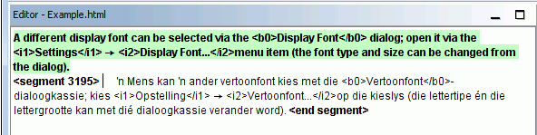

This instant start guide covers only the very basics. Ideally, all users should read the User Manual to familiarize themselves with everything OmegaT has to offer. Shortcuts described here use the "ctrl+key" convention but Mac users should read "cmd+key" instead. The "cmd" key either has a "command" label or an apple mark on Apple keyboards.
The OmegaT screen consists of one space with three distinct windows. Each of these can be resized using the mouse. On the left is the Editor where you type your translation. On the right, at the top, is the Match Viewer, where translation memory matches will be displayed. Below this is the Glossary Viewer, where glossary matches will be displayed.
In the Editor window OmegaT presents the source text 'segmented' into sentences (or paragraphs). You translate these segments one by one. As you pass from segment to segment your translations are recorded in a translation memory. Once all the segments have been translated (or before, if you request) OmegaT will use the translation memory to generate the translated document(s) in a “Target” folder.
OmegaT organizes your translation work in so-called translation projects. For each project OmegaT will create a set of folders. These are used to store the source documents to be translated, the glossaries you may wish to use, and any translation memories you may want to use. OmegaT also creates a “Target” folder which will contain the final translated documents.
Select Project → New... from the menu.
Navigate to the folder where you wish to save the project files, and type in a name for the translation project. This name will be used for the main project folder; all the project files will be stored in this folder or its subfolders.
OmegaT will prompt you to confirm or change the project folders to be created, using the dialog below:
You can simply accept the location of the subfolders, but make sure first that the source and translation language codes are correct. Select the language code (2 letters) or language-and-region code (2 + 2 letters) from the drop-down list, or type them in by hand (the language code can be 2 or 3 letters). Make a mental note of the location of the Target subfolder (for your translated documents). If you want OmegaT to segment by sentence instead of by "paragraph", it's a good idea to double-check the Segmentation Rules.
When you click OK to accept the project set-up, OmegaT will prompt you to select the source documents for import. You can import individual files, or you can import entire folder trees (with all files in all subfolders). If you've accidentally imported the wrong documents, or too many documents, you can simply remove them from the Source folder of your OmegaT project (using your system's file manager, for example).
To check your list of files to be translated, consult the Project Files window (Menu: Project → Project Files..., if it does not open automatically). If you have had to change the Contents of the Source folder, remember to reload the project first (Menu: Project → Reload). OmegaT opens the first file in the project list by default. Remember, OmegaT can only translate files in the formats below if they match the patterns defined in the file filters. Any other files will be ignored.
OpenDocument/OpenOffice.org
Plain text
.po
Bundle.properties Java
XHTML, HTML
HTML Help Compiler
INI ('key=value' format)
DocBook
Microsoft Open XML
Okapi monolingual XLIFF
QuarkXPress CopyFlowGold
Subtitle files (SRT)
ResX
Android resource
LaTeX
Once you have defined the project and the files to be translated, OmegaT will open the first source file in the Editor.
The active segment is highlighted in green; a copy of the source text is
displayed below it, in the “target field”. (At this point, all text outside
the target field is protected and cannot be modified.) You must type your
translation between the tags <segment 0001> and
<end segment>, overwriting the source text. Press
"ENTER" to advance to the next segment. Note:
To move to any other part of the text, whether above or below, double-click on the sentence or paragraph you wish to open.
If you prefer to translate into an empty target field, set this option in Options → Editing Behaviour....
You can change the setup of the Editor pane (for instance to show or not the source text, highlight the translated text etc) in the Main menu entry View
When you press "ENTER", several things happen invisibly: OmegaT adds the segment pair (the source segment and its translation) to the translation memory and also automatically translates any other identical segments that it detects in the other project files. It also scans the translation memory and glossary in search of matches for the next untranslated segment.
If OmegaT finds any fuzzy matches (30% or over) for the next segment in translation memories available, it displays these in the Match Viewer. The first match is pre-selected in the Match Viewer by default.
To insert translation memory matches from the Match Viewer into your target field, you can use keyboard shortcuts:
Press Ctrl+I to insert the pre-selected match at the
cursor position, or...
Press Ctrl+R to overwrite the entire segment with the
pre-selected match.
If several matches have been found and you prefer not to use the pre-selected match:
Select the match you prefer in the Match Viewer: Ctrl+2
for the second match displayed, Ctrl+3 for the third match,
etc.
Then use the Ctrl+I or Ctrl+R shortcuts as
above.
(You can tell OmegaT to insert any first match above a specified matching percentage automatically into the target field whenever the segment opens. Set this option using Options → Editing Behaviour...)
Matching terms in glossaries and dictionaries, that you may have included in the project, will be displayed for reference in the glossary and dictionary panes.
OmegaT provides a powerful range of search
functions. Call up the Search window with Ctrl+F and enter the
word or phrase you wish to search for in the "Search for" box. Alternatively,
select a word or phrase anywhere in the Editor pane and hit Ctrl+F
. The word or phrase is entered in the "Search for" box automatically
in this case.
Ctrl+M into the target segment.
When you have translated all the segments (or earlier if you wish), OmegaT will update the target document(s) using the translations stored in the translation memory. To do so, select Project → Create Translated Documents from the menu. OmegaT will build translated versions of all the translatable documents in the Source folder of the project, whether or not they have been fully translated. The wholly or partially translated files will be saved to the project's Target folder. To finalize your translation, open the target files in their associated applications (browser, word processor...) to check the content and formatting of your translation. You can then return to OmegaT to make any necessary corrections; do not forget to recreating the translated documents.
OmegaT ensures that the formatting of the source documents (bold, italic etc.) is not lost by marking it with special tags. OmegaT tags are composed of one or more letters followed by one or more digit, using the "/" character for closure (for example: <f0>, </f0> <br>, </s2> etc.). You must handle these tags with care and make sure they will be included in the target segments in a proper fashion (see tag operations).
In these examples we've highlighted the tags to make them easier to see, but in OmegaT they will not be highlighted. The HTML tags, highlighted in blue, will be ignored by OmegaT as they fully enclose the segment. The tags, highlighted below in green have to be handled by OmegaT because they are within the segment. Here is an example of a segment in HTML:
<p>A different display font can
be selected via the <b>Display
Font</b>dialog. Open it via
the <i>Settings</i> →<i>Display
Font...</i> menu item. The font type and
size can be changed from the dialog.</p>
Here is how OmegaT will display it, with the translation in Afrikaans:

When OmegaT has created the translated document, the HTML will look like this:

OmegaT doesn't automatically detect faulty tagging in the translated
document. Before you deliver the document to your client, you should
therefore check your tags for errors. Select Tools→ Validate Tags from the menu.
A table will be displayed showing the segments where the source and target
tags do not correspond. Click on the segment number. You will be taken
automatically to the questionable segment in the Editor, where you can
correct the tagging. Hit Enter to
validate the corrected segment and check the correction by pressing again
Ctrl-T.
In some cases tag errors may even prevent a document from opening. You should therefore ensure that you have corrected any tag errors before you create the translated files. Finally, you should always double-check the final formatting by opening the translated document in its associated viewer or editor.
In some programming languages (e.g. PHP, C) special tags are used as placeholders in strings that are used in combination with the printf-function. OmegaT can detect and validate these tags if you enable it. Select Options→ Tag Validation... from the menu. You can choose between simple and full validation. In simple validation only simple variants of the possible placeholder values are used. This is usefull when the source code does not contain the more expressive and complex placeholders and you get a lot of false positives.
| Legal notices | Home | Index of contents |